Phewa Lake & Pokhara
Discover the jewel of Nepal's Annapurna region - a tranquil lake set against majestic Himalayan peaks, rich cultural heritage, and thrilling adventures.
Overview
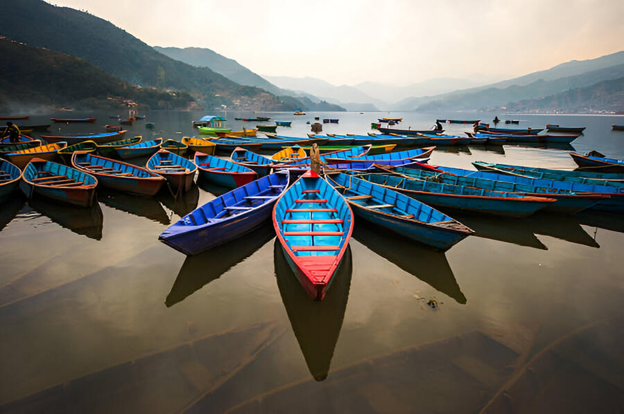
Phewa Lake
Phewa Lake (also known as Phewa Tal) is the second largest lake in Nepal and the centerpiece of Pokhara. The serene waters reflect the magnificent Annapurna mountain range, creating a breathtaking panorama that has made this destination famous worldwide. The lake covers approximately 4.43 square kilometers and reaches a maximum depth of 24 meters.
Learn more about Phewa Lake →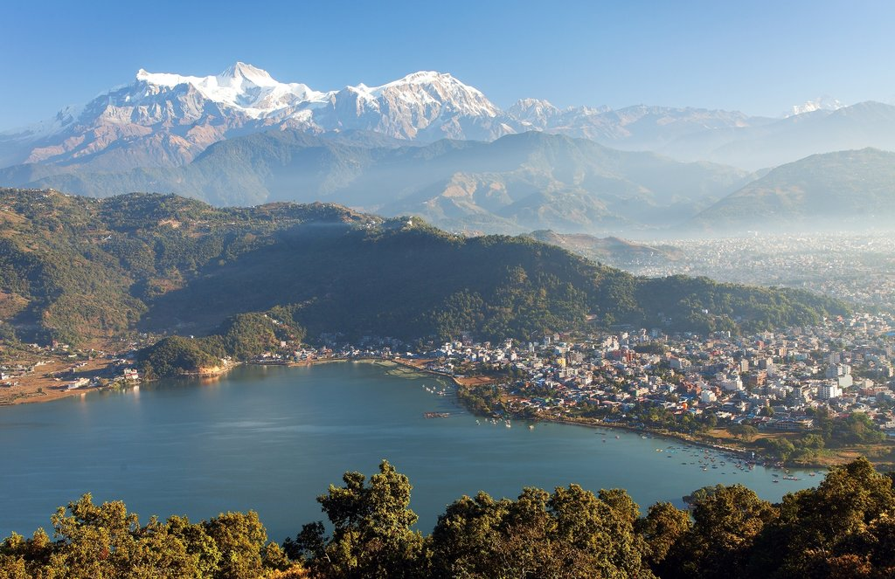
Pokhara City
Pokhara is Nepal's second-largest city and the gateway to the Annapurna Circuit, one of the most famous trekking routes in the world. Known as the tourism capital of Nepal, Pokhara offers a perfect blend of natural beauty, adventure activities, and cultural experiences, all set against the backdrop of the stunning Himalayan peaks.
Learn more about Pokhara →Phewa Lake Attractions

Tal Barahi Temple
This two-storied pagoda temple is located on a small island in the middle of Phewa Lake. Dedicated to the goddess Barahi, the temple is an important religious site for Hindus. Visitors can reach the temple by taking a short boat ride, making it both a spiritual and scenic experience.
Read more about Tal Barahi →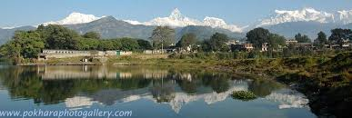
Lakeside (Baidam)
Lakeside, locally known as Baidam, is the tourist hub of Pokhara, stretching along the eastern shore of Phewa Lake. This vibrant area is filled with hotels, restaurants, cafes, and shops selling local handicrafts and trekking gear. The relaxed atmosphere makes it perfect for strolling, shopping, or enjoying lake views from a café.
Discover Lakeside →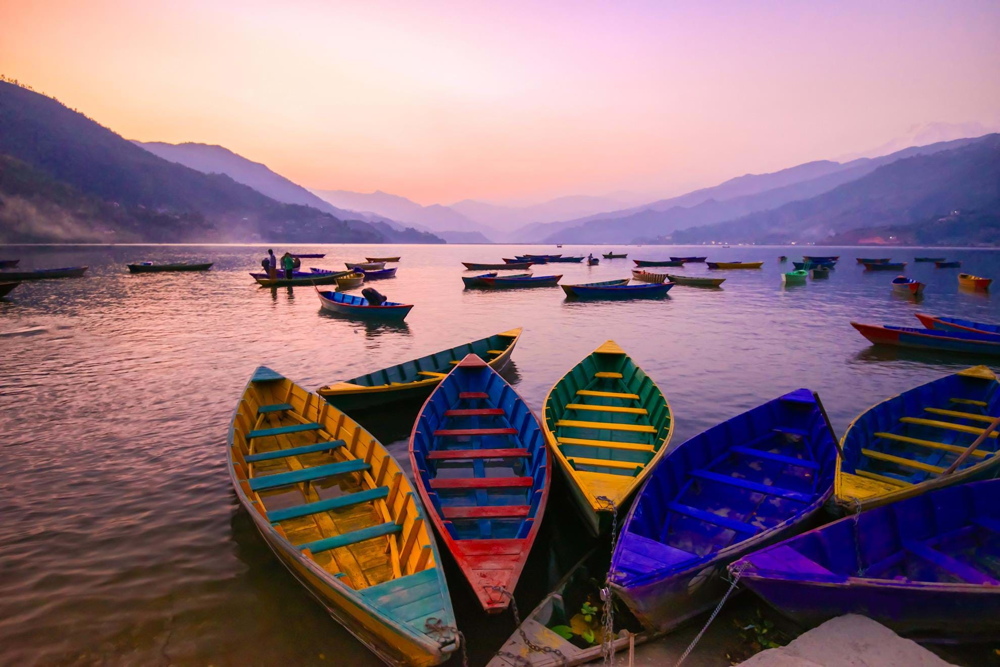
Boating Experience
One of the most popular activities at Phewa Lake is boating. Visitors can rent colorful wooden boats, either with a boatman or to row themselves. Sail across the tranquil waters while enjoying panoramic views of the Annapurna range reflected in the lake, creating a mesmerizing double image of the mountains.
Boating information →Pokhara Highlights
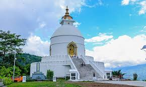
World Peace Pagoda (Shanti Stupa)
Built on a hilltop, this Buddhist monument offers spectacular views of Phewa Lake and the Annapurna range. Constructed by Japanese Buddhists, the stupa promotes peace and harmony. A hike to the pagoda provides breathtaking views, especially at sunset.
More about Peace Pagoda →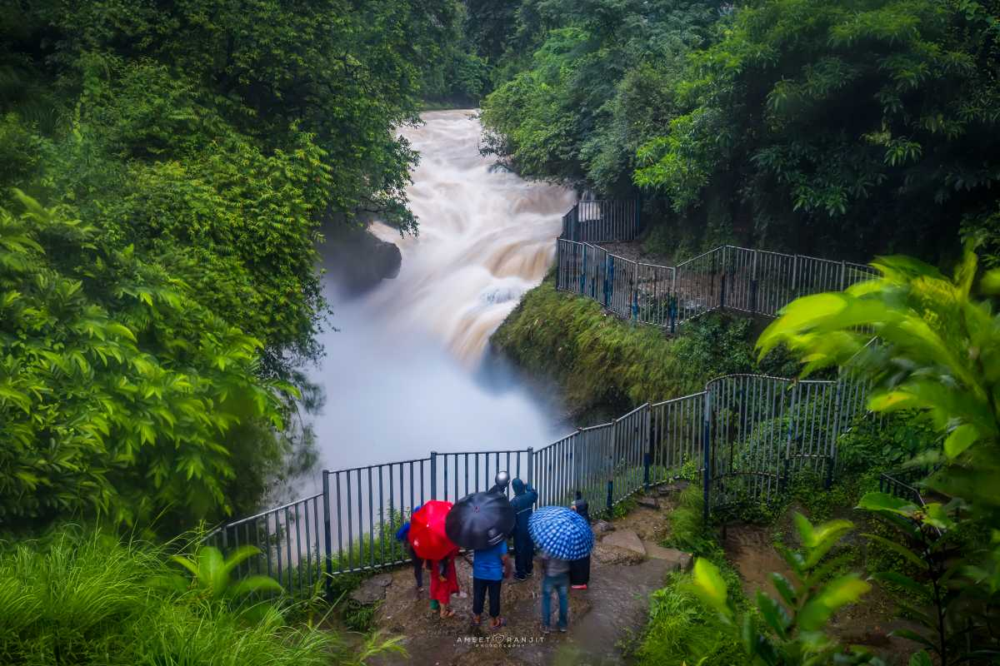
Devi's Fall (Patale Chhango)
This unique waterfall disappears into an underground tunnel after falling into a deep gorge. The water originates from Phewa Lake and flows underneath the city. The site has a fascinating local legend about a foreign tourist named Devi who was swept away by the current.
Learn about Devi's Fall →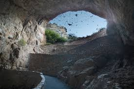
Bat Cave (Chamero Gupha)
Home to thousands of horseshoe bats, this natural limestone cave offers a unique adventure. Visitors can navigate through narrow passages and marvel at the stalactites and stalagmites, while witnessing the remarkable sight of bats hanging from the ceiling.
Exploring Bat Cave →
Paragliding
Pokhara is one of the world's best paragliding destinations. Take off from Sarangkot hill and soar like a bird with views of Phewa Lake, Pokhara Valley, and the Annapurna range. Tandem flights with experienced pilots are available for beginners, while certified paragliders can fly solo.
Paragliding information →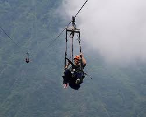
Zip Flying
Experience one of the longest, fastest, and steepest ziplines in the world. The 1.8 km line starts at Sarangkot and descends 600 meters in just under two minutes, reaching speeds of up to 120 km/h while offering magnificent views of the Annapurnas and Phewa Lake.
Zip Flying details →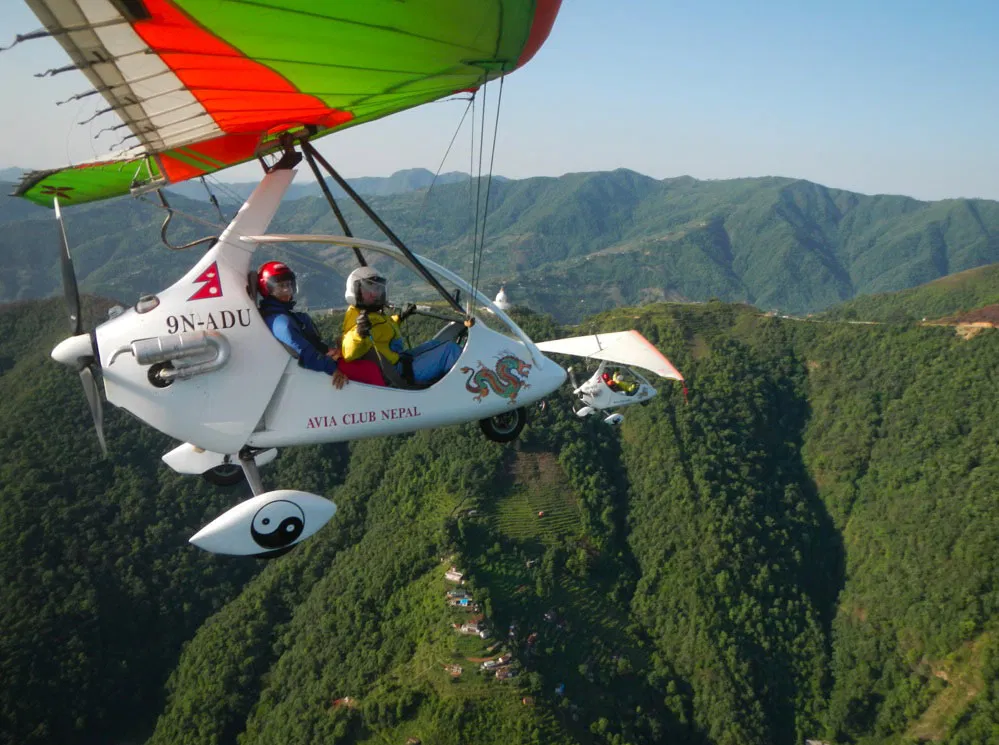
Ultralight Flying
Take to the skies in an ultralight aircraft for an unforgettable aerial view of the Himalayan peaks, glaciers, lakes, and rivers. Flights operate from Pokhara Airport, with various durations available from 15 minutes to an hour, depending on your preference.
Ultralight flight info →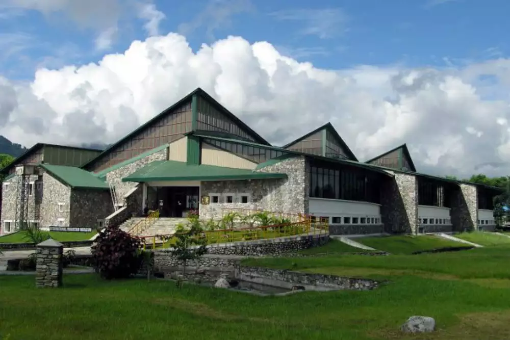
International Mountain Museum
This museum showcases the history of mountaineering, the culture of mountain people, and information about famous peaks and expeditions. Exhibits include mountaineering equipment, geological samples, and cultural artifacts from various Himalayan ethnic communities.
Visit the Museum website →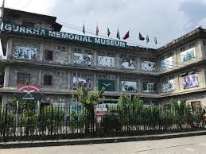
Gurkha Memorial Museum
Dedicated to the famous Gurkha soldiers, this museum displays their history, achievements, and valor. The collection includes uniforms, medals, photographs, and weapons, providing insight into the legacy of these renowned warriors who have served in the British and Indian armies.
Gurkha history →
Old Pokhara Bazaar
Experience the authentic local lifestyle at the old market area of Pokhara. Walking through the narrow streets, you'll find traditional houses, temples, and shops selling local produce and handicrafts. This area offers a glimpse into the daily life of the locals, away from the tourist hotspots.
Explore the Old Bazaar →Photo Gallery
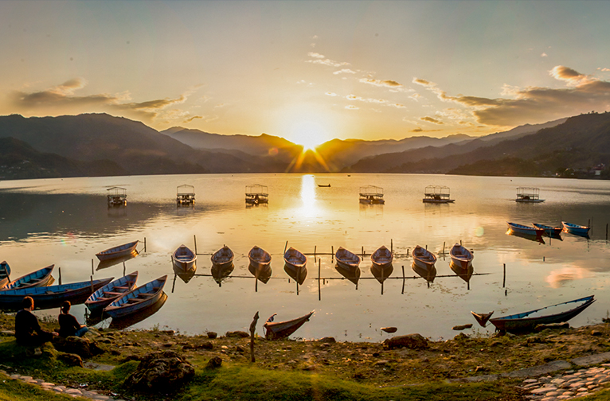
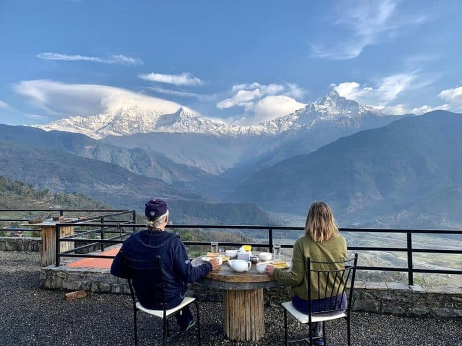
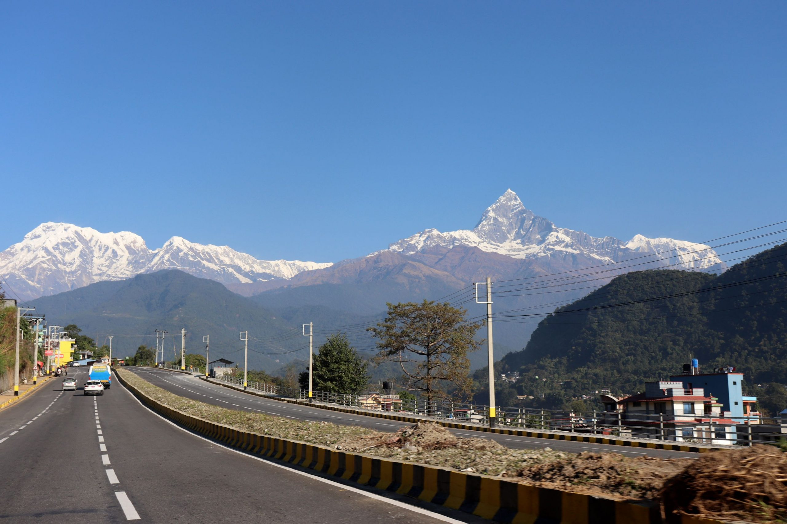
Plan Your Visit
Essential Information
The best time to visit Phewa Lake and Pokhara is during the following seasons:
- Autumn (October-November): The most popular season with clear skies, comfortable temperatures (10-25°C), and excellent mountain views.
- Spring (March-May): Beautiful with rhododendrons in bloom, slightly warmer than autumn (15-30°C), and generally clear mountain views.
- Winter (December-February): Cold nights (0-5°C) but pleasant days (10-20°C) with the clearest mountain views and fewer tourists.
- Summer/Monsoon (June-September): Least favorable due to heavy rainfall, though prices are lower and the landscape is lush.
There are several ways to reach Pokhara from Kathmandu:
- By Air: Multiple daily flights from Kathmandu to Pokhara Airport (25 minutes)
- By Bus: Tourist buses depart daily from Kathmandu (6-7 hours)
- By Private Vehicle: Hire a car with driver (6-7 hours, more flexibility for stops)
- From Pokhara to Phewa Lake: Lakeside is within walking distance from central Pokhara, or take a quick taxi ride
International travelers: Most arrive via Tribhuvan International Airport in Kathmandu, then connect to Pokhara.
Pokhara offers a wide range of accommodation options to suit every budget:
- Luxury Hotels: 5-star properties with lake views, spa facilities, and fine dining (US$150-300+)
- Mid-range Hotels: Comfortable 3-4 star hotels with good amenities (US$50-150)
- Budget Hotels & Guesthouses: Clean, basic accommodation for budget travelers (US$15-50)
- Hostels: Dormitory-style accommodation for backpackers (US$5-15)
- Homestays: Experience local hospitality with a Nepali family (US$20-40)
Location tip: Staying in the Lakeside area (Baidam) puts you within walking distance of Phewa Lake and many restaurants and shops.
Getting around Pokhara and to/from Phewa Lake is relatively easy:
- Walking: Most attractions around Lakeside are within walking distance
- Taxis: Readily available and affordable (negotiate before riding)
- Rental Bicycles: Many shops rent bicycles for NPR 200-500 per day
- Rental Motorcycles/Scooters: Available for NPR 800-1500 per day (international driving permit required)
- Local Buses: Cheap but crowded option for longer distances within Pokhara
Boat rentals at Phewa Lake:
- Rowboats: NPR 400-500 per hour
- Sailboats: NPR 600-800 per hour
- Boats with boatman: NPR 700-1000 per hour
- Boat to Tal Barahi Temple: NPR 1000-1500 round trip (includes waiting time)
Visitor Experiences
"Watching the sunrise over the Annapurna range reflected in Phewa Lake was one of the most magical moments of my life. We rented a boat early in the morning and rowed to the middle of the lake - the silence and beauty were indescribable."
"Don't miss paragliding in Pokhara! The views of the lake and mountains from above are absolutely spectacular. My tandem pilot was a pro who made me feel safe while also making sure I had the experience of a lifetime."
"The peace and tranquility of Phewa Lake at sunset is something I'll never forget. After a week of trekking the Annapurna Circuit, relaxing by the lakeside with a cold drink was the perfect way to recover. The reflection of the fiery sunset on the water was simply magical."
Cultural Tips & Etiquette
Respectful Travel in Nepal
- Dress Code: Dress modestly, especially when visiting temples or religious sites. Cover shoulders and knees.
- Religious Sites: Remove shoes before entering temples. Ask permission before photographing inside religious buildings.
- Body Language: The traditional greeting is "Namaste" with palms pressed together. It's considered disrespectful to touch someone's head.
- Photography: Always ask permission before photographing local people, especially during religious ceremonies.
- Tipping: Tipping guides, porters, and service staff is customary (10-15% in restaurants if service charge isn't included).
- Bargaining: Negotiate prices in markets, but do so respectfully and with a smile.
Environmental Responsibility
- Avoid single-use plastics - bring a reusable water bottle with a purification system.
- Stick to established trails when hiking to prevent erosion.
- Never leave trash behind - carry all waste until you can dispose of it properly.
- Support local conservation efforts that protect Phewa Lake's ecosystem.
Historical Context
Ancient Origins
Pokhara Valley has been settled since ancient times, with evidence of early inhabitants dating back thousands of years. The area was part of the ancient trading route between India and Tibet.
15th-18th Centuries
Pokhara became an important trading center under the Malla Kingdom. The region was later incorporated into the unified Kingdom of Nepal under King Prithvi Narayan Shah.
Early 20th Century
Pokhara remained relatively isolated until the 1960s, accessible primarily by foot. The region's natural beauty remained largely unknown to the outside world.
1950s-1960s
Construction of highways connecting Pokhara to other parts of Nepal began, opening the region to visitors. The first tourist hotels were established.
1970s-1980s
Pokhara emerged as a major tourism destination. The Annapurna Conservation Area Project was established in 1986 to protect the region's natural and cultural heritage.
Present Day
Pokhara has developed into Nepal's tourism capital, with Phewa Lake at its heart. Conservation efforts focus on preserving the lake's ecosystem while balancing tourism development.
Seasonal Events & Festivals
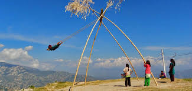
Dashain (October)
Nepal's most important Hindu festival celebrates the victory of good over evil. In Pokhara, families gather for feasts, fly kites, and set up bamboo swings. Baidam and the lakeshore become particularly festive during this 15-day celebration.
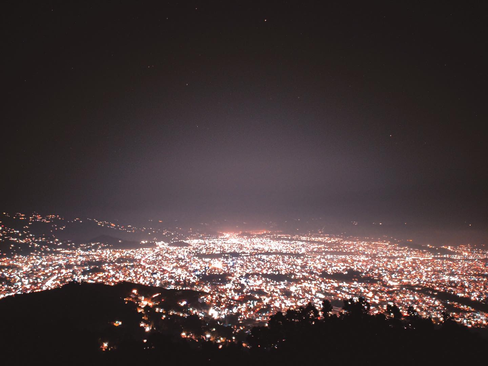
Tihar (October/November)
The festival of lights illuminates Pokhara with oil lamps and candles. Homes around Phewa Lake are decorated with marigold garlands and colorful rangoli patterns. The reflection of lights on the lake creates a magical atmosphere.
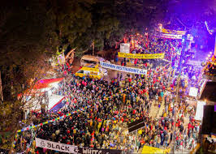
Pokhara Street Festival (December)
Lakeside Road transforms into a vibrant pedestrian zone with food stalls, cultural performances, and local products. This year-end celebration showcases Pokhara's diverse cultural heritage and attracts visitors from across Nepal.
Nearby Excursions
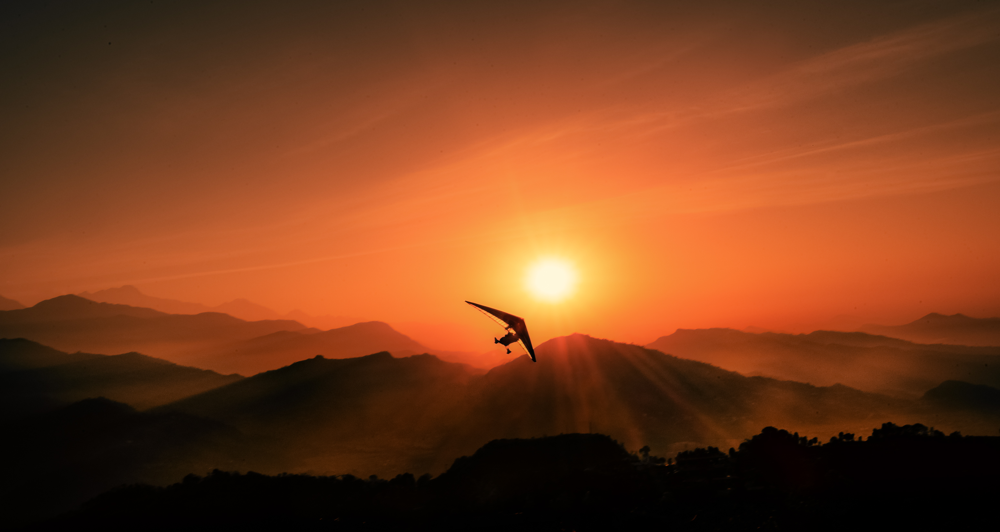
Sarangkot (1 hour from Lakeside)
This popular viewpoint offers spectacular sunrise views of the Annapurna range. At 1,600m elevation, it provides a panoramic vista of Pokhara Valley and Phewa Lake. Many paragliding flights launch from here.
How to visit Sarangkot →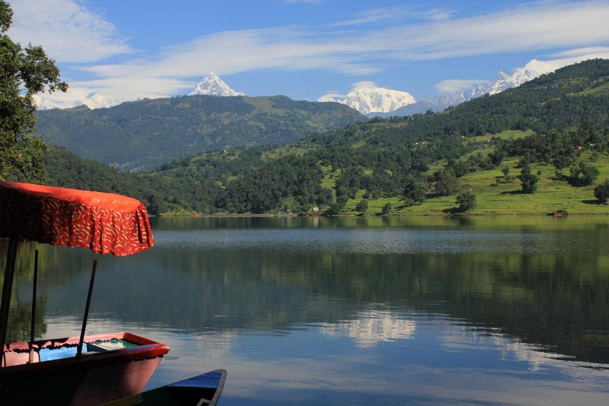
Begnas Lake (30 min drive)
The third largest lake in Nepal offers a peaceful alternative to Phewa, with fewer tourists and a more rural setting. Surrounded by green hills and villages, it's perfect for a quiet day trip and authentic local experiences.
Begnas Lake guide →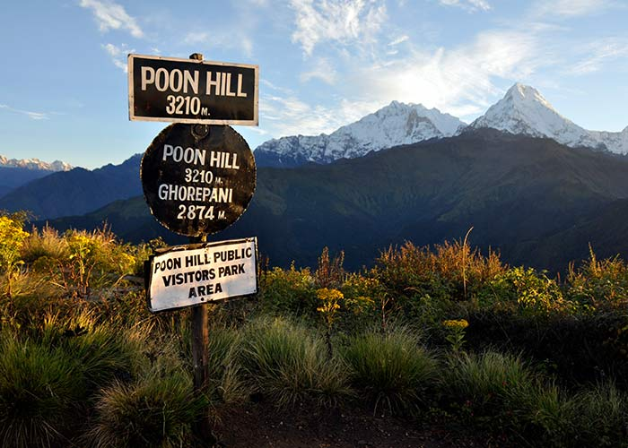
Poon Hill Trek (3-5 days)
One of the most accessible Himalayan treks begins near Pokhara. This moderate hike reaches 3,210m and offers spectacular mountain views without extreme altitude. The perfect introduction to Himalayan trekking.
Poon Hill trekking guide →Ready for Your Pokhara Adventure?
Let us help you plan the perfect Phewa Lake experience with customized itineraries, local guides, and exclusive activities tailored to your interests.
Contact Our Team View Tour Packages